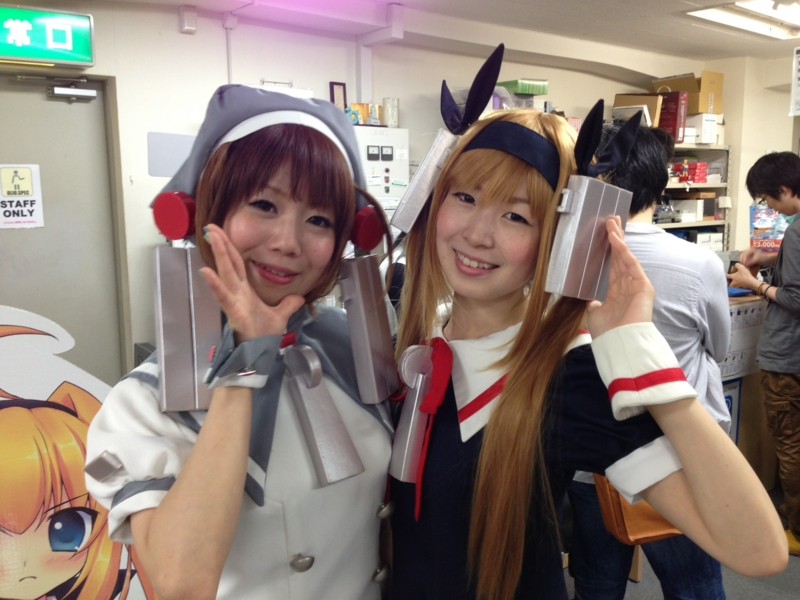
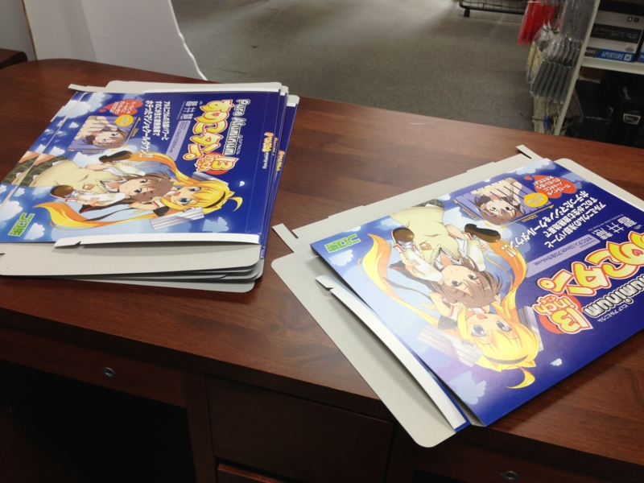
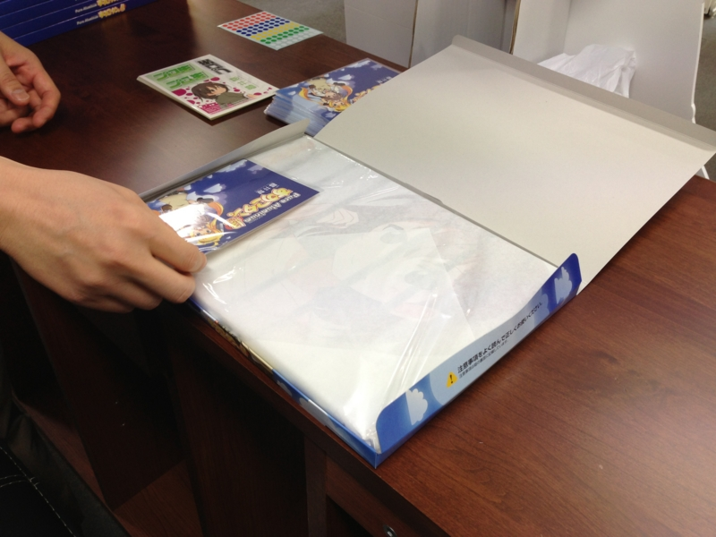
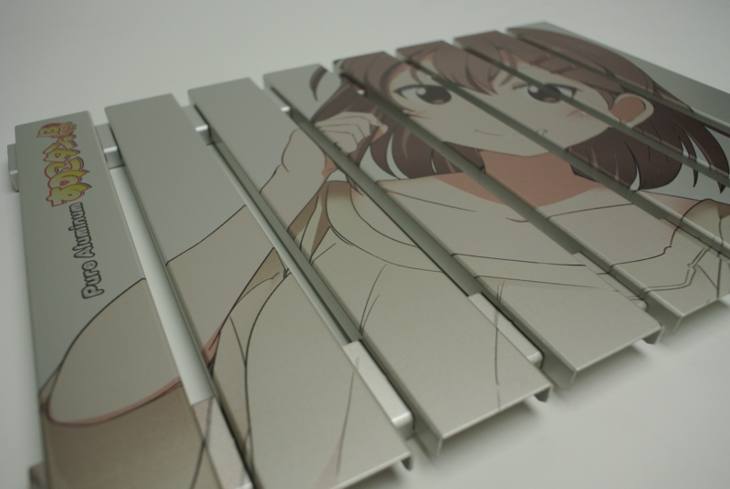
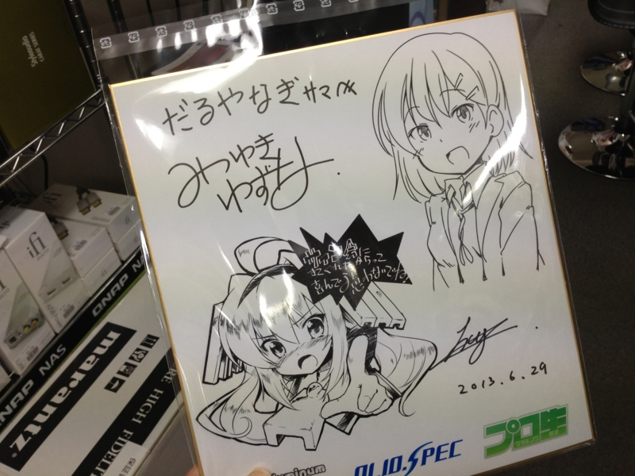
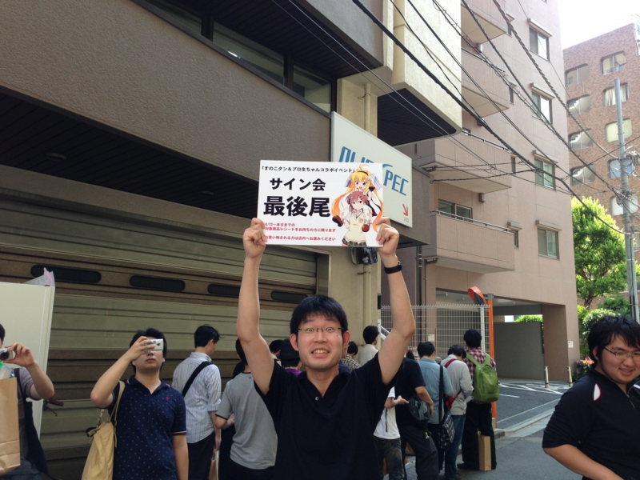

すのこタン。とプロ生ちゃんのコラボイベントをなぜか手伝ってきた
公開日：

ちょっと異色だったのが、オリオスペックが実施した「すのこタン」と「プロ生ちゃん」のコラボイベント。
このイベントは、マルダイのアルミ製冷却台「すのこタン。」と、IT・開発系コミュニティ「プログラミング生放送」のキャラクター「暮井 慧（プロ生ちゃん）」という両キャラクターのコラボ製品の発売を記念したもの。
参加してきました！
というか、なぜか製品の梱包箱を折るのを手伝わされていました……。

折った箱には、すのことオリジナルカードを封入。これが店頭に並んだわけです。

ちなみに「すのこ」というのはノート PC の冷却台。アルミかなにかでできていて、PC の下に敷いて使う。夏場だと放熱が大変だったりするので、こういうのが一枚あると案外役に立つそうだ。で、そのキャラクターが「すのこタン。」になのかな？ プロ生ちゃん（プログラミング生放送）については、説明は必要ありませんよね。

コスプレパフォーマンスあり、イラストレーターさんのサイン会ありと、かなり盛り上がったような気がします。こういうイベントに参加したのは初めてだったのだけど、あんがい楽しいものですねぇ。

なにはともあれ、参加してくださった方、ありがとうございました！*1